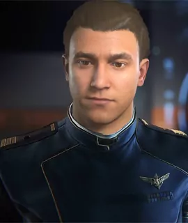

BIOGRAFIE: Decon Melcom Vorn
Bio von Decon Melcom Vorn

Name Decon, Malcom Vorn
Geburtsdatum: 20. August 2914
Alter: 37
Geburtsort: New Austin, Terra/ Terra System
UEE Status: Citizen
Dienstzeit: 11/32 -12/45
Haarfarbe: DunkelBraun
Augenfarbe: DunkelBraun
Größe: 178 Zentimeter
Gewicht: 71 Kilogramm
Aktueller Wohnort: Arccorp/ Stanton System
Besonderheiten, Gewohnheiten -
Hobbys: Fliegen, Klettern, Sammelt Objekte von Welten die er besucht hat und Artefakten
(schlechte) Angewohnheiten: Geht gern Risiken ein,
Talente: Er ist Technische Begabt. Kann anhand der Geräusche erkennen das etwas mit dem Schiff nicht stimmt Spricht etwas Xi´an und Banu
Tics, Marotten: Überspielt Anspannung mit dummen Witzen und Sprüchen
Freizeitgestaltung: Pool Spielen, Beschäftigt sich mit Alt-Terranischer und Haderanische Geschichte
rätselhafte Züge: Erzählt nichts aus seiner Militärzeit
hervorstechender Charakterzug: Loyal und Ehrlich aber Impulsiv
Geschmack -
Bücher: Das Geheimnis um Haderan,Mythen und der Alten Zivilisationen -
Musik: Alte Rockmusik (1975-2130) - Filme: Parasit I Bis IV (Alles was danach kam war Müll) -
Farben: Oliv Grün -
Kleidung: Lederjacken, Arbeiterhosen, Trägt gerne MobiBrillen (Verträgt die AR- Kontaktlinsen nicht besonders gut) -
Essen/Trinken: Lieblings Speise Pirozhk (Terranische gefüllte Teigtaschen)
Lieblings Getränke: Schwarzer Kaffee aus Bremen oder Fizzz Cola
Lieblings Alkohol: Radegast Whiskey- Pur mit einem Stück Eis
Er liebt: uralte Zivilisationen und verlorene Artefakte.
Er hasst: Unehrlichkeit.
Geburtsdatum: 20. August 2914
Alter: 37
Geburtsort: New Austin, Terra/ Terra System
UEE Status: Citizen
Dienstzeit: 11/32 -12/45
Haarfarbe: DunkelBraun
Augenfarbe: DunkelBraun
Größe: 178 Zentimeter
Gewicht: 71 Kilogramm
Aktueller Wohnort: Arccorp/ Stanton System
Besonderheiten, Gewohnheiten -
Hobbys: Fliegen, Klettern, Sammelt Objekte von Welten die er besucht hat und Artefakten
(schlechte) Angewohnheiten: Geht gern Risiken ein,
Talente: Er ist Technische Begabt. Kann anhand der Geräusche erkennen das etwas mit dem Schiff nicht stimmt Spricht etwas Xi´an und Banu
Tics, Marotten: Überspielt Anspannung mit dummen Witzen und Sprüchen
Freizeitgestaltung: Pool Spielen, Beschäftigt sich mit Alt-Terranischer und Haderanische Geschichte
rätselhafte Züge: Erzählt nichts aus seiner Militärzeit
hervorstechender Charakterzug: Loyal und Ehrlich aber Impulsiv
Geschmack -
Bücher: Das Geheimnis um Haderan,Mythen und der Alten Zivilisationen -
Musik: Alte Rockmusik (1975-2130) - Filme: Parasit I Bis IV (Alles was danach kam war Müll) -
Farben: Oliv Grün -
Kleidung: Lederjacken, Arbeiterhosen, Trägt gerne MobiBrillen (Verträgt die AR- Kontaktlinsen nicht besonders gut) -
Essen/Trinken: Lieblings Speise Pirozhk (Terranische gefüllte Teigtaschen)
Lieblings Getränke: Schwarzer Kaffee aus Bremen oder Fizzz Cola
Lieblings Alkohol: Radegast Whiskey- Pur mit einem Stück Eis
Er liebt: uralte Zivilisationen und verlorene Artefakte.
Er hasst: Unehrlichkeit.
Charakterisierung
Decon Ist eher der Humorvolle Typ. Er ist der Inbegriff der Blöden Sprüche. Aber auch Sarkasmus gehört zu seinem Repertoire. Decon Hauptinteresse ist es, seine Besatzung am Leben zu erhalten und sein Schiff am Fliegen. Er sagt über sich selbst: "Wenn der Wind nach Norden bläst, gehe ich eben nach Norden, aber nur um Sprit zu sparen“. Obwohl Decon normalerweise eher praktisch als intellektuell erscheint, überrascht er gelegentlich seine Freunde, indem er Vertrautheit mit unterschiedlicher Literatur zeigt, die von den Werken von Xiang Yu bis hin zu Gedichten von Samuel Taylor Coleridge variiert, obwohl er keine Ahnung hat, "wer die" Mona Lisa war. Decon verfügt sowohl über fundiertes Wissen über die Weltraumerkundung als auch über Archäologie und Xenolinguistik. Er reagiert er nach dem Motto: "Wenn jemand versucht, dich zu töten, versuchst du, 'ihn zuerst umzulegen." Er ist aber auch der Typ Konflikte auszuhandeln wenn die Situation es zulässt und tötet nur wenn ihm keine Wahl gelassen wird; Oft stört er sich nicht einmal an einem "fairen Kampf" wenn sein Gegner es beschwört. Er handelt oftmals auch sehr impulsiv, aber auch beschützend seinen freunden und seiner Mannschaft gegenüber und ist sehr loyal. Zwar handelt er gerne mal unüberlegt, dennoch ist er zu ausgeklügelten Plänen und Taktischen Manövern fähig. Er glaubt daran, dass man Freunde niemals zurücklässt, und sobald man Ein Teil seiner Crew ist, ist man sich dessen Schutz sicher. Dabei bleibt er aber immer ein begeisterter Entdecker mit der Gabe, ständig in Schlamassel zu geraten. Obwohl ihm Sprünge durch Jumppoints den gewünschten Adrenalin kick bescheren, ist in Bezug auf echte Entdeckungen noch nicht sehr viel herumgekommen.Liebesleben
Zum ersten Mal richtig verliebt war er in der Siebten Klasse. Ihr Name war Sandra Nurmer. Dummerweise fand sie ihn nicht sehr anziehend. Nadine Sanders dagegen fand ihn fantastisch. So kam es auch zu dem Zwischenfall in der Bibliothek der Schule, für die Knutscherei bekam er eine Woche lang nachsitzen. Beim nächsten Mal stellten sie es geschickter an und trafen sich heimlich. Allerdings war es nicht so toll wie erwartet. Die erste richtige Freundin hatte er erst in der 8 Klasse, Elyse Landre, es hielt ganze Vierundzwanzig Monate, dann zog sie mit ihrer Familie Nach Davien. Er sah sie erst 8 Jahre später erst wieder und hält bis zum heutigen Tag eine enge Freundschaft zu ihr. Sie treffen sich so oft sie es können. Auf der UEE Militär Akademie Traf Decon dann seine heutige Ex Frau Karen Zayas- Vorn. Am 14. Juni 2939 heiraten die beiden. Nach seiner Scheidung hatte er nur einige belanglose Liebschaften, nichts besonderes.Militär Dienstzeit
Nach seiner vier jährigen Ausbildung an der Military Flight Academy der UEE Navy auf MacAthur im Kilian System, wurde Decon Mitte 2937 an Bord der Idris Fregate UEES Stanton versetzt. Er verbrachte dort den größten teil seiner Dienstzeit an Bord der Stanton. Er war in mehrere Missionen involviert. Unter anderem War er teil des Kampfes gegen die Verbrecherorganisation OMC und Kämpfte im Großen Feldzugs gegen die Vanduul im Odin System. Decon erreichte bis zum ende seiner Dienstzeit den Rang eines Commanders. Nach seiner 6 Jährigen Dienstzeit verließ Decon die UEE Navy 2945 und begann ein leben als Bürger der UEE.Leben als Citizen
Am 14. Juni 2945 heiratete er seine langjährige Freundin Karen Zayas und beide zogen nach Terra Prime. Dort begann er ein kurzes Studium in Geschichte, Archäologie und Xenolinguistk, jedoch beendete er dieses nach etwa einem Jahr vorzeitig. Kurz darauf mit beginn 2946 begann er eine Piloten Stelle an Bord einer Anvil Crucible. Karen ebenfalls eine ehemalige Navy Pilotin Flog schon länger eine MISC Starfarer für ein Transportunternehmen auf der zentralen Route von Terra nach Davien und zurück. Sie mochte ihre Arbeit. Für Decon war die Arbeit an Bord der Crucible jedoch nicht zufriedenstellend. Er wollte mehr sehen als nur das Terra System. Er wollte den Traum seiner Kindheit wahr machen und den Weltraum zu erkunden und noch mehr sehen als es in seiner Militärischen dienstzeit möglich war. Also entschied er, sich beim Imperial Cartography Center (ICC) zu bewerben. Er rechnete nicht damit aufgenommen zu werden. Kurz darauf wurde er Jedoch aufgrund seiner Militärischen Erfahrungen und sonstigen Fähigkeiten mit Freuden Angenommen. Seiner Frau gefiel der Gedanke natürlich gar nicht ihren Ehemann noch seltener zu sehen als ohne hin schon, doch willigte sie ein, da sie wusste wie sehr er es sich wünschte seiner „Berufung“ nachzugehen zu können. Auch für Decon war es nicht leicht seine Ehefrau zurück zu lassen, aber sie hatte ihre Verpflichtungen und er nun die seinen. Im Mai 2947 Trat er dem ICC offiziell bei und wurde teil der Crew der Anvil Carrack ICCS Sionis ,eines Forschungsschiffs das die Nördlichen Regionen der UEE erkundete. Decon war zu dieser zeit schon auf vielen Schiffs Typen gewesen, aber er bewunderte diesen Typ von Raumschiff. Dieses Design, diese Effektivität, diese Anmut. Viele Monate verbrachte er fernab der Heimat. Natürlich litt Decons Ehe darunter, das er seine Frau nicht sehr häufig sah. Eine zeit lang konnten die beiden eine Fernbeziehung aufrecht erhalten aber es hielt nur 12 Monate.Am 19 April 2948 einigten die beiden sich auf die Scheidung. Sie gingen Freundschaftlich auseinander und stehen auch bis heute in Kontakt. Decon arbeitete 3 weitere Jahre als Pilot und Spezialist für Missionsplanung sowie Archäologie beim ICC. Darunter auch unter dem Bekannten Entdecker und NavJumper Captain Nathan Corman. Corman, ebenfalls ein ehemaliger Navy Veteran, war für Decon ein Art Vorbild. resolut, ehrenhaft und immer alles im griff war das Bild ihm. Decon Arbeitete gern an Bord der Sionis, es wurde zu seinem Leben. Bis es im Januar 2950 wegen eines Vorfalls zu seinem austritt kam. Während einer seiner Nachtschichten entdeckte er ungeplante Datenübertragungen an ein in der nähe befindliches Comm Array. Dabei hielt er es zuerst für einen Cyberangriff und untersuchte daraufhin den Daten-stream und die Betroffenen Schiffsdatenbanken. Was er dabei entdeckte war für ihn ein schock. Er erwischte Captain Corman dabei, wie er Daten die von der Crew in den letzten Monaten gesammelt wurden aus den Speicherbanken des Schiffes Löschte und an einen bekannten Schwarzmarkt Infobroker verkaufte. Das Geld sollte wie immer auf Cormans Privates Konto gezahlt werden. Als Decon ihn mit den vorwürfen konfrontierte leugnete dieser alles. Selbst eine Protokollierung des Streams das Decon als Beweis erstellte wurde von ihm abgetan mit der Begründung „Was soll dir das schon nützen Junge“. Als er ein paar tage später diesen Vorfall dem ICC meldete wurde er abgewimmelt mit der Begründung, das es sich um keinen relevanten Vorfall handele und das ICC die Sache auf sich beruhen ließ. Decon wurde klar, das ICC wusste Bescheid über die Aktivitäten von Corman und sah in die andere Richtung. Anscheinend auch nicht zum ersten mal. Decon konnte diesen Umstand nicht länger ertragen und kündigte, „Dafür habe ich meine Ehe ruiniert ?“. Eine kurze zeit lief es für Decon nicht sehr gut. Er versank in einem Tief, und verbrachte seine Zeit nun neben seinem Neuen Job als „Gelegenheits- Arbeiter“ (mal als verlade Arbeiter, mal als Frachtpilot, mal als Turmschutze. Seine Private Zeit verbrachte er meist in einer Bar auf Arccorp mit Zuviel Alkohol.
Wird Fortgesetzt..